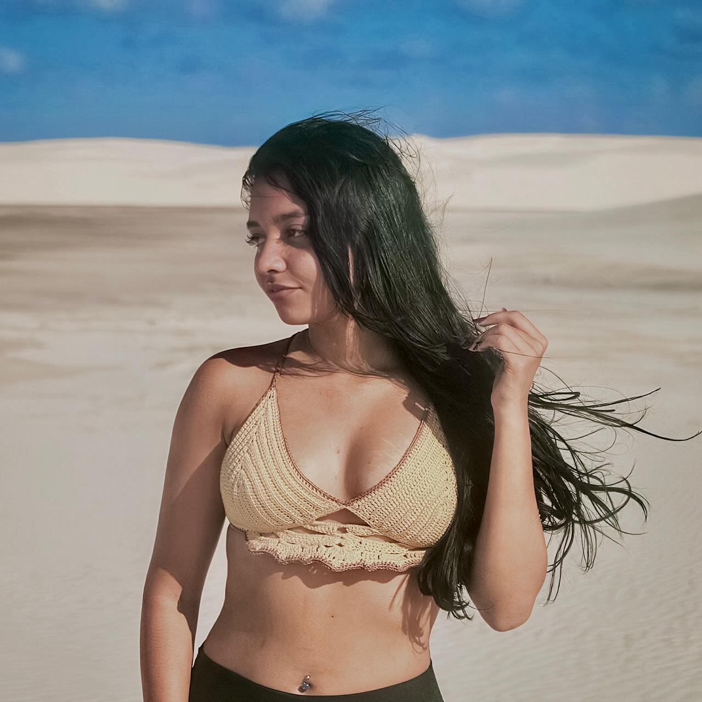
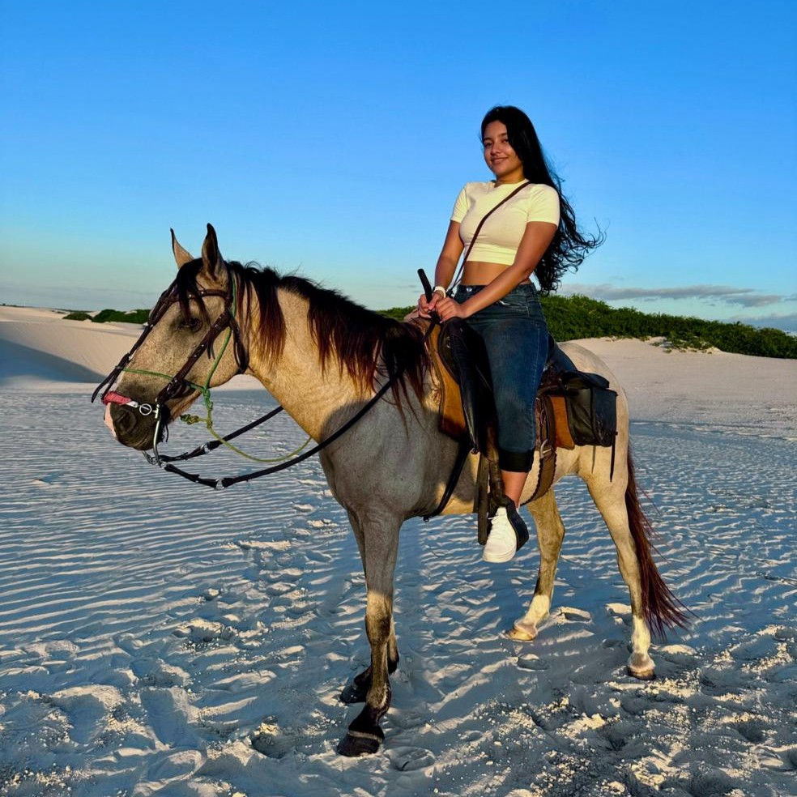
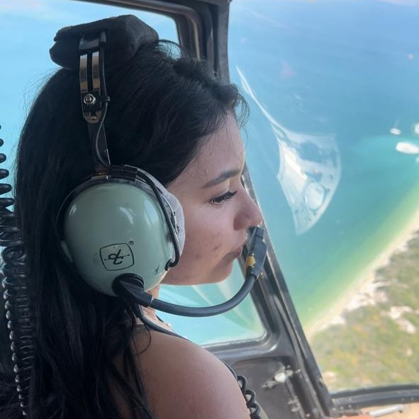
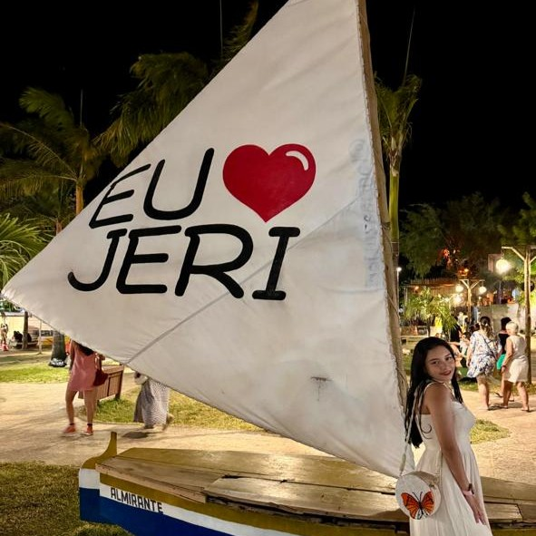

Quem é Dandara Garcia?
Sou Dandara Garcia, estudante de Engenharia de Software no
Centro Universitário Internacional (UNINTER), atualmente cursando o
terceiro período.
Tenho grande interesse na área de desenvolvimento web, especialmente
em front-end, onde posso unir lógica, criatividade e design para criar
interfaces funcionais e atrativas.
Um pouco mais sobre mim...
-

O crochê é uma das minhas maiores paixões. Adoro transformar linhas em peças únicas, principalmente biquínis feitos à mão. É uma forma de relaxar, expressar criatividade e ver o resultado nascer ponto por ponto.
-

Andar a cavalo é um hobby que me conecta com a natureza. Não faço com tanta frequência, mas cada vez que monto é uma experiência única — só eu, o cavalo e aquele momento de tranquilidade e equilíbrio.
-

Entre meus hobbies, um dos mais emocionantes é passear de helicóptero. É uma mistura de adrenalina e paz, e cada voo é uma lembrança que fica guardada na memória.
-

Viajar me inspira a conhecer novas culturas e paisagens. Uma experiência inesquecível foi Jericoacoara, no Ceará, com suas dunas, pôr do sol mágico e energia única.